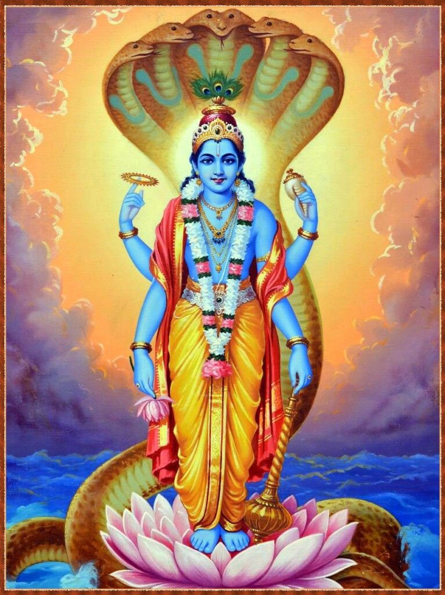
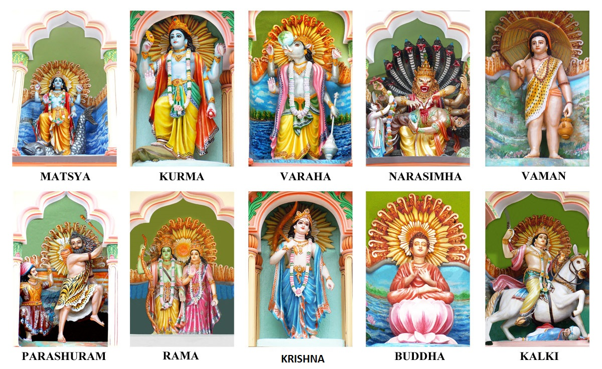

VISHNU - THE PRESERVER

Vishnu is one of the most important gods in the Hindu pantheon.Vishnu is the Preserver and guardian of men, he protects the order of things (dharma), and he appears on earth in various incarnations (avatars) to fight demons and to maintain cosmic harmony.
Vishnu is the most important god of Vaishnavism, the largest Hindu sect. Indeed, to illustrate Vishnu's superior status, Brahma is, in some accounts, considered to have been born from a lotus flower which grew from Vishnu's naval. Vishnu was married to Lakshmi (the goddess of good fortune). However, unable to live with the quarrels between his three wives, Vishnu eventually sent Ganga to Shiva and Sarawati to Brahma. In some accounts, another wife of Vishnu's is Bhumi-Devi (goddess of the Earth). He is considered to live in the city of Vaikuntha on Mt. Meru, where everything is made of shining gold and fabulous jewels and where there are lakes resplendent with lotus flowers.
The 10 Avatars of Vishnu
Vishnu has ten avatars or worldly appearances, which are people, animals or a mix of both. Vishnu's ten avatars are (take the reference from the pic on right.) :
-Buddha
-Krishna (the hero)
-Rama (the hero)
-Parashurama (the hero)
-Nara-Simha or Narasimba (the man-lion)
-Vamana (the dwarf)
-Matsya (the fish)
-Kurma (the tortoise)
-Varaha (the boar)
-Kalki (who will appear when the world ends, riding a white horse and heralding the start of a new golden age)